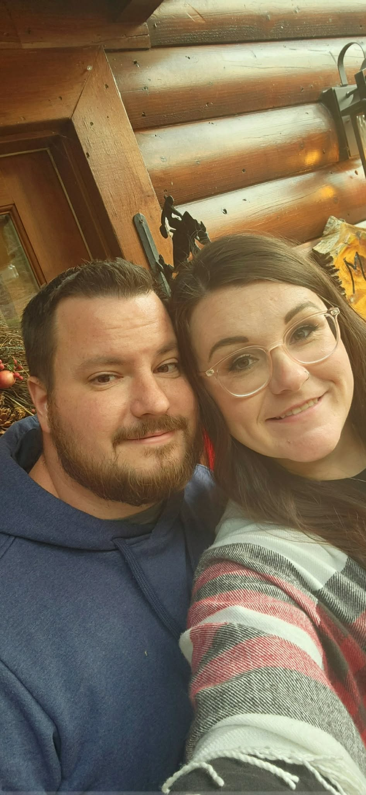
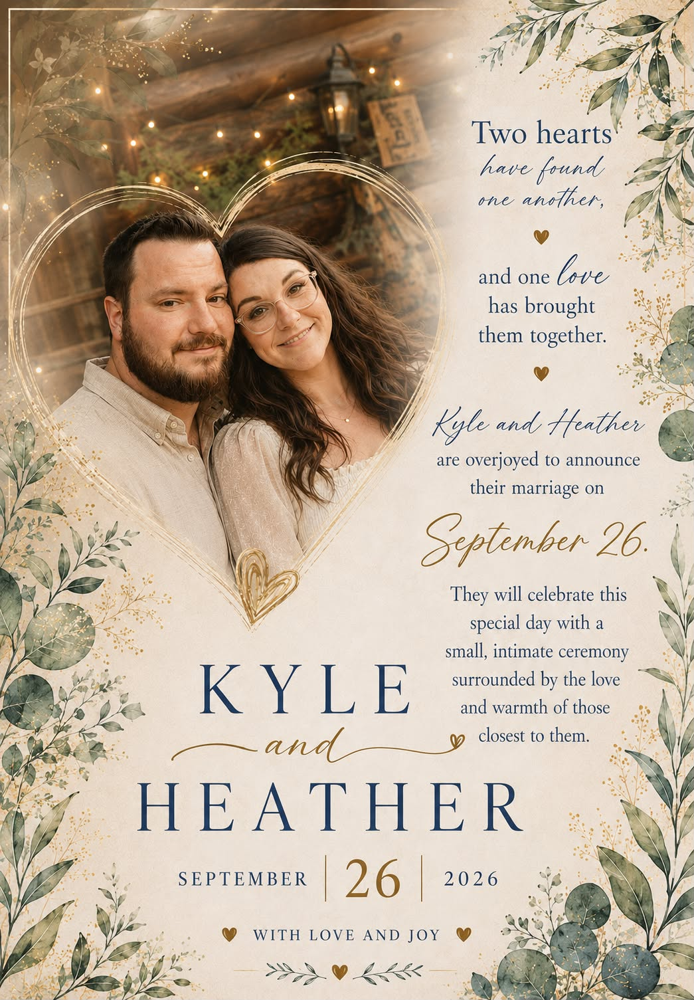
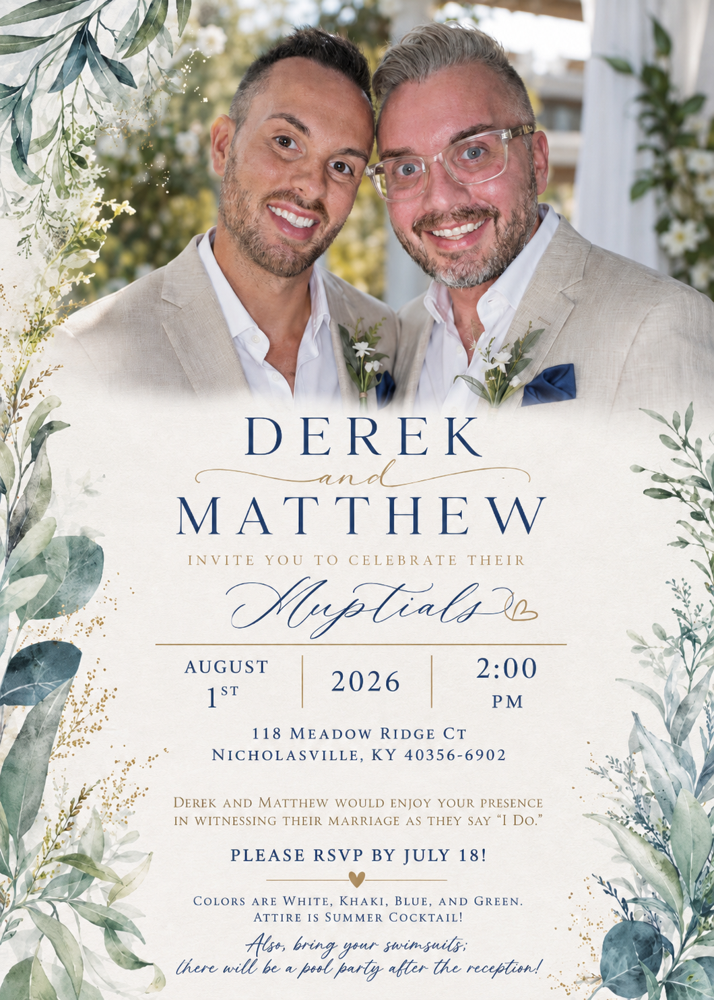

Engagement Portraits
Elegant artwork celebrating the beginning of your journey together.
MORE THAN A PHOTOGRAPH
Every custom portrait begins with a story. Sometimes those stories are told through photographs taken years apart. Sometimes they are created from treasured images of loved ones who never had the opportunity to stand together. Whatever the vision, our goal is to create artwork that feels natural, timeless, and deeply personal.
Each completed portrait can become the foundation for an entire coordinated collection, including wedding invitations, save the date cards, memorial tributes, graduation announcements, anniversary keepsakes, birthday celebrations, holiday cards, canvas artwork, framed prints, and heirlooms that will be cherished for generations.
DESIGNED FOR LIFE'S MOST CHERISHED MOMENTS
Elegant artwork celebrating the beginning of your journey together.
Coordinated invitations and stationery designed from your custom portrait.
Honor cherished memories with meaningful portraits and keepsakes.
Celebrate accomplishments with personalized artwork and announcements.
Bring generations together in portraits that preserve your family's history.
Museum quality artwork created to become tomorrow's family heirlooms.
CUSTOM DESIGN STORY
Every custom design begins with a meaningful photograph. Through thoughtful composition, artistic design, and attention to personal details, a simple image can become a timeless keepsake created for a special moment.

The beginning of a story. A photograph carrying memories, emotions, and personal meaning.

A photograph transformed into a personalized design created to celebrate a meaningful occasion.
FROM SEPARATE PHOTOGRAPHS
Every masterpiece begins with one or more treasured photographs. Whether the images were taken years apart, in different locations, or under completely different lighting conditions, each photograph is carefully studied and thoughtfully combined into a seamless portrait that appears as though it had always existed.


Every custom portrait begins with one or more treasured photographs. Each reference image is carefully examined to preserve authentic facial features, expressions, perspective, lighting, and personality before being thoughtfully combined into one seamless composition.

What began as several individual photographs became one elegant portrait created to tell a single story. The finished artwork serves as the foundation for an entire coordinated collection including invitations, announcements, keepsakes, canvas artwork, and timeless family heirlooms.
Start My PortraitONE PORTRAIT
A custom portrait is often just the beginning. The same artwork can become beautifully coordinated wedding invitations, save the date cards, memorial programs, graduation announcements, framed gifts, canvas prints, holiday cards, and keepsakes that carry your story into every meaningful occasion.

The completed engagement portrait became the inspiration for this professionally designed wedding invitation, creating a unified collection that carried the couple's story into every detail of their celebration. Every custom portrait can become the foundation for beautifully coordinated artwork designed specifically for your family.
ENDLESS POSSIBILITIES
Every family has a unique story to tell. Whether celebrating new beginnings, honoring treasured memories, or preserving your family's history, every portrait is thoughtfully created to become something meaningful for generations to come.
Portraits, invitations, save the dates, programs, thank you cards, and reception displays.
Bring generations together even when the original photograph never existed.
Celebrate the lives of those you love through timeless keepsake artwork.
Announcements, invitations, framed portraits, banners, and gifts.
Custom invitations, keepsakes, milestone celebrations, and family artwork.
Christmas cards, family portraits, calendars, and seasonal keepsakes.
IMAGINE THE POSSIBILITIES
Not every treasured memory was captured by a camera. Some loved ones lived in different generations, some families were separated by distance, and some moments simply passed before everyone could stand together. Through thoughtful digital artistry, those moments can now become timeless works of art that celebrate the people, relationships, and memories that continue to shape your family's story.
Create a portrait where grandparents stand beside grandchildren they never had the opportunity to meet, preserving a family connection that can be treasured for generations.
Bring together photographs taken during different seasons of life to celebrate the sacrifices, love, and strength that define military families.
Transform engagement photographs into elegant portraits, coordinated wedding invitations, save the date cards, reception displays, and keepsakes designed around one timeless image.
Create meaningful memorial portraits that respectfully celebrate the life and legacy of someone who continues to hold a special place in your family's heart.
Combine photographs taken years apart into one seamless portrait that brings siblings, parents, grandparents, and future generations together.
From birthdays and anniversaries to graduations and retirements, custom portraits become lasting reminders of the moments worth celebrating.

WHY CUSTOM PORTRAITS
Every custom portrait is thoughtfully designed to preserve authentic facial features, natural expressions, and the unique personality of every individual. Rather than simply combining photographs, we carefully create artwork that feels genuine, timeless, and emotionally meaningful.
Whether displayed as a framed portrait, canvas print, wedding invitation, memorial tribute, or family keepsake, each design is created to become part of your family's story for generations to come.
Our goal is not simply to create beautiful artwork. It is to preserve relationships, celebrate milestones, and create portraits that families will proudly display and lovingly pass from one generation to the next.
OUR PROCESS
Every custom portrait is individually designed with exceptional attention to detail. We work closely with you throughout the process to ensure your finished artwork reflects your vision while preserving the authenticity of every person and every memory.
Send one photograph or several images that you would like incorporated into your custom portrait.
Describe your ideas, preferred style, background, colors, clothing, or special requests.
Every facial feature, expression, lighting angle, and perspective is carefully refined into one seamless composition.
You'll receive a preview before final completion so adjustments can be made if needed.
Receive your completed portrait ready for printing, framing, invitations, announcements, or digital sharing.
FREQUENTLY ASKED QUESTIONS
Yes. Many custom portraits are created from photographs taken months or even decades apart.
No. Damaged, faded, torn, or aging photographs can often be restored before becoming part of your custom portrait.
Yes. Family legacy portraits are one of our most requested services and allow generations to be beautifully united.
Absolutely. Elegant indoor settings, outdoor landscapes, seasonal scenes, or completely custom environments can all be created.
Every portrait is carefully designed to preserve authentic facial features, proportions, lighting, and expressions for a timeless, realistic appearance.
Yes. Wedding invitations, graduation announcements, memorial programs, holiday cards, and many other coordinated designs can all be created from the same portrait.
OUR PROMISE
TruePortrait Revival is committed to creating artwork that honors the people and memories entrusted to us. Every custom portrait receives individual attention, meticulous refinement, and thoughtful artistic care to ensure your finished masterpiece is something your family will proudly display and preserve for generations.
BEGIN YOUR STORY
Whether you're celebrating a wedding, honoring a loved one, preserving your family's history, or creating a portrait that brings generations together, we'd be honored to help transform your vision into a timeless work of art.